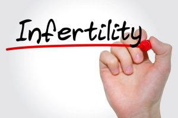

Infertility
بانجھ پن یا عقیم کا مطلب بچہ پیدا کرنے کی صلاحیت میں کمی یا بچہ پیدا کرنے کی صلاحیت کا نہ ہونا ہے بانجھ پن کی تعریف اس طرح کی جاتی ہے کہ ایک سال تک نارمل مباشرت ہوتے رہنا اور اس دوران کوئی م انع طریقہ اختیار نہ کرنے کے باوجود حمل قرار نہ پانا بانجھ پن کہلاتا ہے۔ بانچھ پن کا شکار مرد بھی ہو سکتا ہے اور عورت بھی اس مرض میں مبتلا ہو سکتی ہے۔ بانجھ پن دوطرح کا ہو تا ہے 1- ابتدائی بانجھ پن Primary Infertility 2- ثانوی بانجھ پن Secondary Infertility ابتدائی بانجھ پن Primary Infertility ابتدائی بانجھ پن PrimaryInfertility کی مریض وہ خواتین ہیں جنہیں پہلے کبھی حمل نہیں ہوا۔ ثانوی بانجھ پن Secondary Infertility ثانوی بانجھ پن Secondary Infertility کی مریض وہ خواتین ہیں جنہیں پہلے حمل ہو چ کا ہو ۔ ایک اور اصلاح Sterility سے مراد بچہ پیدا کرنے کی صلاحیت کا مرد یا عورت میں مکمل طور پر ختم ہونا ۔ بانجھ پن میں مبتلا جوڑوں میں 40 فیصد وجو ہات مردوں میں پائی جاتی ہیں لیکن اس کے باوجود مباشر ت میں قصور وار صرف عورت کو ہی سمجھا جاتا ہے۔ بلکہ عورت کےلئے بانجھ پن ہونا ایک گالی بن جاتا ہے۔ حمل کے لئے شرائط حمل کے لئے مرداور عورت دونوں کاصحت من ہونا بہت ضروری ہے ۔جس طرح مردوں میں ضعف باہ کو مرض نہیں ہونا چائیے اور مادہ منویہ Semen نارمل اور اس میں تولیدی خلیوں یا سپرم Sperm کی شرح مناسب ہونی چائیے اسی طرح عورت کو بھی تندرست ہون ا چائیے ۔عورت کو ورم رحم ، سیلان رحم Leucorrhea ، ماہواری کی بے قاعدگی ، ہارمونز کے توازن میں خرابی ، ماہواری یا حیض کی تنگی وغیرہ کا شکار نہیں ہونا چائیے اندورنی اعضائے تولید 4 حصوں پر مشتمل ہیں ۔ 1 ۔ مہبلVagina 2َ ۔ رحم یا بچے دانی Fallopian Tubes 3۔قاذف نالیاں 3 Uterine Tubes استقرار حمل استقرار حمل نر و مادہ دونوں کے تولیدی اعضاء کی سلامتی پر موقوف ہے۔ اس لئے علاج سے پہلے ان دون وں کے تولیدی اعضاء کی طبعی کار کردگی اور نقائص کی معلومات فراہم کرنا ضروری ہے اور طبیب کو ان اعضاء کے طبعی افعال(Normal function)سے واقف یت رکھنا ضروری ہے. اس لئے چاہیے کہ نظام تولید کی تشریح اور منافع سے متعلق کتابوں کا کافی مطالعہ ک رے تاکہ طبعی افعال(Normal function) کو غیرہ طبع ی افعال(Abnormal function)سے امتیاز دے سکے. ہم مردانہ اور زنانہ امراض کو لکھنے سے پہلے انکے تولیدی اعضاء کی اجمالی تشریح و منافع کو ذکر کر چکے ہیں جو کہ افعال تولید (Reproductive function) میں خاص رول ادا کرتے ہیں، چاہے وہ بالخصوص تولیدی اعضاء ہو ں یا اعضائے تولید کے لئے معاون و مددگار کی حیثیت رکھتے ہوں. لہذا اس مرض کے معالجہ سے پہلے تشریح و منافع کو پڑھیں تا کہ بیماری کے سبب کو پہچان سکیں۔